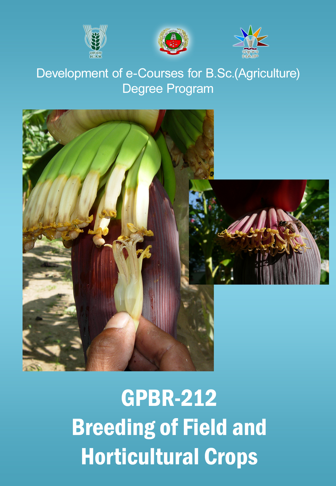

BREEDING OF FIELD & HORTICULTURAL CROPS ::
(2+1)

Select the lecture topic...
Lecture 01
: RICE - Oryza sativa
Lecture 02
: Rice Varieties Released..
Lecture 03
: Hybrid Rice Seed...
Lecture 04
: WHEAT
Lecture 05
: MAIZE
Lecture 06
: SORGHUM
Lecture 07
: FINGER MILLET
Lecture 08
: PEARL MILLET
Lecture 09
: VARGU (Kodo millet)
Lecture 10
: PULSES
Lecture 11
: BLACK GRAM
Lecture 12
: COWPEA
Lecture 13
: OILSEEDS
Lecture 14
: GINGELLY (TIL, ELLU)
Lecture 15
: CASTOR
Lecture 16
: FIBRE CROPS
Lecture 17
: JUTE
Lecture 18
: BREEDING FORAGE...
Lecture 19
: SUGAR CANE
Lecture 20
: SUGAR BEET
Lecture 21
: POTATO
Lecture 22
: Breeding Fruit Crops
Lecture 23
: BREEDING FOR INSECT ...
Lecture 24
: BREEDING FOR DISEASE...
Lecture 25
: BREEDING FOR ABIOTIC ..
Lecture 26
: BREEDING FOR ...
Lecture 27
: SEED MULTIPLICATION ...
Lecture 28
: VARIETAL RUNDOWN..
Syllabus